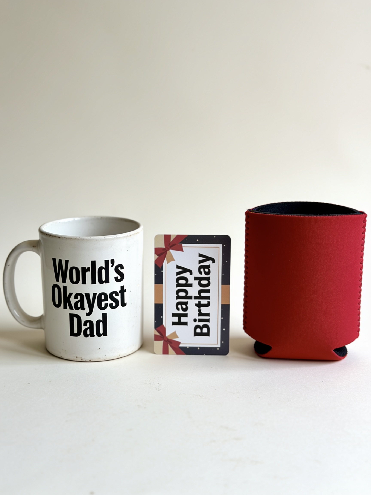

The Father's Day Gift That Doesn't End Up in the Garage
Why thousands of "impossible to shop for" dads are getting a brewing kit this year.
It happens every June.
You ask your dad what he wants for Father's Day. And he says the same thing he says every year:
"I don't need anything."
So you panic. You get him a tie. A mug. A gift card. He smiles. He says thanks. And then the gift disappears into a drawer — and you both quietly know it's never coming out again.
Here's the worst part: you weren't being lazy. Dads are genuinely the hardest people on earth to shop for. If they want something, they just buy it themselves. So everything you give them feels like a polite formality — a transaction you both perform so nobody feels bad.
But there's one kind of gift that breaks the pattern. And it's probably not what you'd expect.
The problem with "beer stuff"
If your dad loves beer, you've almost certainly tried the beer gifts already. The novelty koozie. The fancy etched glasses. The case of his favorite IPA. They land fine. They also vanish without a trace.

The problem? None of those give him anything to do. They're things. He already has things. A man who has reached dad age has, by definition, acquired all the things he needs and most of the things he wants.
What dads actually light up about is a project. Something to learn. Something to tinker with on a Saturday. Something to master and then — crucially — show off. Ask anyone whose dad has a smoker, a vegetable garden, or a garage full of half-finished furniture. The gift wasn't the tool. The gift was the excuse to become a guy who does that thing.
That's why a beginner brewing kit hits completely different. You're not giving him beer. You're giving him "I made this."
What actually happens after he opens it
The first weekend, he brews his first batch. It's about an hour of hands-on time — steeping, stirring, sealing it up — and then the kit quietly does the rest while he checks on it through the day like a proud new parent.

Two weeks later, he's pouring his own beer. His own recipe. His name on the bottle if he wants it there.
And then comes the part nobody warns you about: he will not shut up about it. Every single person who walks into that house is going to be handed a glass and told the story of "the beer he made." It becomes his thing. His brag. His entire new personality for at least one full season.
That's the real gift. Not the beer — the pride.
"But what if it just collects dust?"
Fair question. It's the number-one fear with any hobby gift — and, honestly, with most brewing kits, it's a fair fear. So let's be straight about why it happens, and how BrewKit Lab was specifically built to prevent each failure point.
Most kits are confusing. Homebrew forums are full of beginners who spent an hour just decoding the instructions before they could start. BrewKit Lab ships with a single plain-English instruction card. No jargon, no acronyms, no "consult the wiki." If your dad can follow a chili recipe, he can follow this.

Most kits arrive incomplete. The most common complaint about the big-name kits is discovering — after gift day — that bottles, caps, or other essential gear cost extra. BrewKit Lab includes everything he needs for his first brew in the box. He opens it, and he can make beer that afternoon.
Most kits gamble his first batch. And the first batch is everything: if it tastes bad, the kit goes into the closet forever and the hobby dies on day one. That's why every BrewKit Lab kit is backed by the First Batch Guarantee — if his first brew doesn't come out great, we replace the ingredients free and personally walk him through the next one.
One more thing he'll love telling people
Here's a fact your dad will repeat at every barbecue for the rest of his natural life: brewing beer at home was federally illegal in America until 1978.
Americans brewed at home for centuries — George Washington kept a recipe, Thomas Jefferson's household brewed — right up until Prohibition wiped the tradition out. And then, in one of history's great bureaucratic oversights, Congress forgot to re-legalize it for forty-five years after Prohibition ended. President Carter finally signed the fix in 1978, and the entire American craft-beer boom grew out of the hobby that came roaring back.
So this isn't a gimmick gift. It's a craft older than the country itself, and your dad gets to be one more person bringing it back.
The part where you have to hurry
Father's Day is June 21 — just 11 days away. Here's the simple version of which kit to pick:
Order now so it arrives before Father's Day — and this year, instead of the polite "thanks" and the drawer it disappears into, you get the phone call. The one where he can't stop talking about his beer.